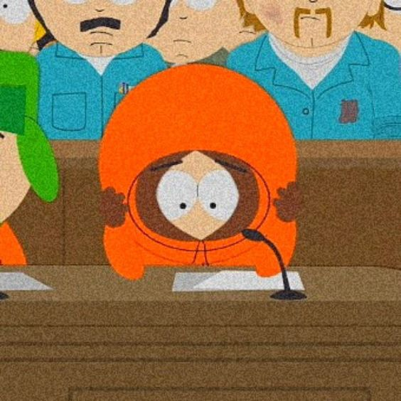

different versions
fanon 1: local druggie and playboy
oh my god where do i even start? i am really REALLY sick of this dipiction of kenny. fanfics, art, either are just as bad.
this kenny is just plain annoying. he's just your general overconfident flirty pretty boy. loud, always making dirty jokes, always turning every sentence into a flirty remark. he doesn't shut up. ever. sometimes its so bad, that even if under all that, the author depicts some good aspects of his personality (like his compassion ect), it hardly even registers because of how goddamn annoying he is. not only this, but he's always doing drugs! smoking, getting high on weed, you name it! (he's aged up when this happens do not worry). he's too stoned or annoying to take seriously. theres only been some rare occasions where the author gets a good balance of the flirtyness and his good naturedness. overall: ugh.
i won't explain tweek and craig here, since both have their relationship with kenny mentioned in their pages.
Butters
ah yes the main ship. depending on how strongly this kenny's traits is presented, it could either be a disaster or not, but never anything abusive (and i know that for a fact, i've read a LOT of bunny fanfics).
usually the two complement eachother almost perfectly, both having a good, balanced relationship. mostly however bad the depiction of kenny is, whenever he interacts with butters, the bad traits make way for the good ones. and then he's back on his bullshit. theres been still a fair few times i've seen kenny just be outright gross (language wise. he's otherwise respectable) when in the presence of butters. its the flirting, just lots of weird remarks. but generally their relationship is done real well no matter kenny's charcter depiction.
Stan
really all of these depend on the ship depicted in the fanfiction. so lets talk fanart first. with stan kenny usually has an average relationship. pretty simple, kenny's being a flirt and Stan groans (me too stan.), usually not wanting to be involved with whatever sexual innuendo he's refering to. they tend to still be good friends though, either way.
kyle
even if he's a dumb flirt, kyle generally seeks advice from this depiction of kenny. they'll usually sit down in kyle's room, kyle will rant about stan and kenny will offer suprisingly good advice, and then make a flirty remark after kyle's pleased with what kenny responded with.